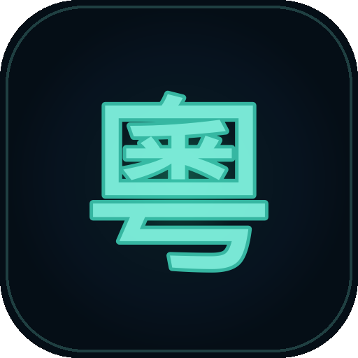

Say it.
聽得明，先講得出。
Solo獨白
ENGLISH
Where is the MTR?
粵語 · Hong Kong
dei6
tit3
hai2
bin1
地鐵喺邊？
Jyutping
口語
6 tones
dei6 tit3 hai2 bin1
地鐵喺邊？
Where is the MTR?
THEIR SIDE · 對面
直走就到。
zik6 zau2 zau6 dou3
MTR →
dei6 tit3 hai2 bin1
地鐵喺邊？

JyutTranslate
準備好俾人聽明未？